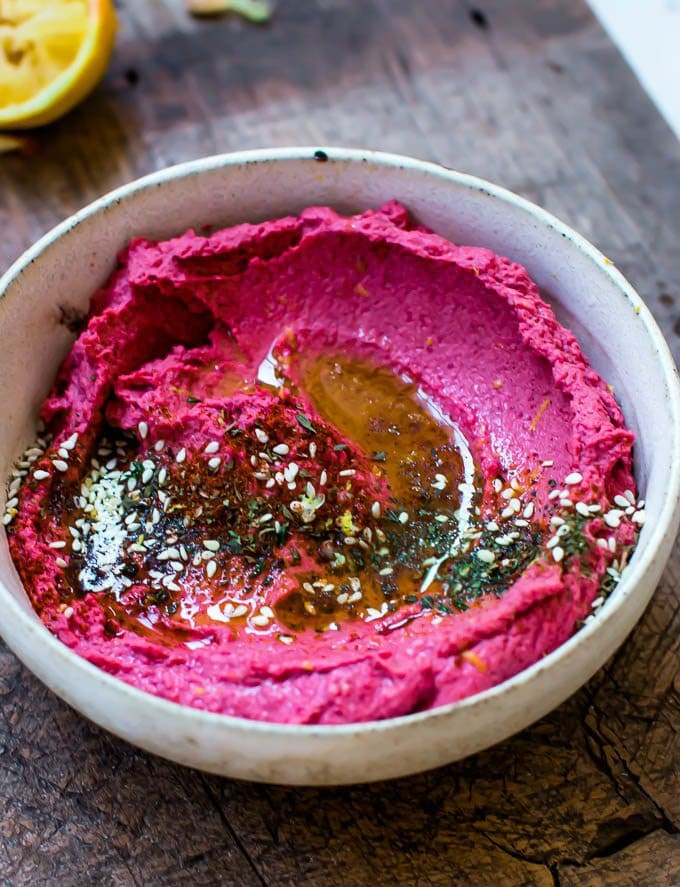

Home
Betroot Hummus

Ever since I discovered this beetroot hummus recipe, it has been my favorite
appetizer. I'm making it A-L-L the time. It always disappears
minutes after I serve it! I highly recommend making a double
batch if you're feeding more than 6 people.
For this recipe you will need:
- 1 can of chickpeas
- 2 cooked beetroots/li>
- 2 cloves of garlic
- olive oil
- salt
- lemon juice
Directions
- Place the garlic, beetroot and chickpeas into a food processor.
Mix for one minute until ground. Add olive oil until it becomes creamy.
- Add seasonings like salt and lemon juice if needed.
- Scrape and serve in a bowl.